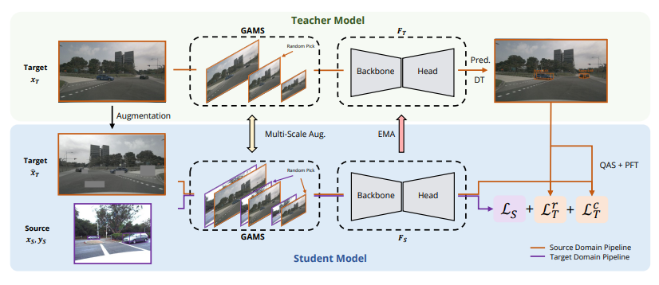
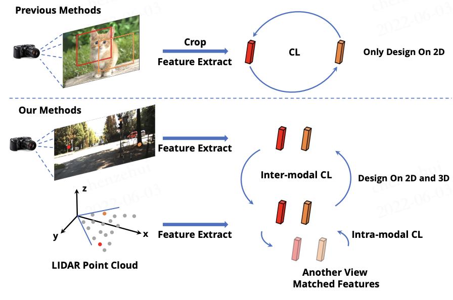
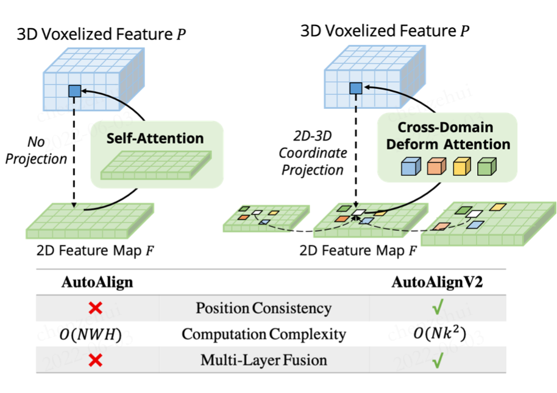
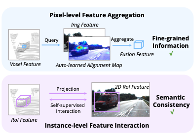
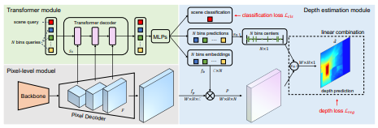
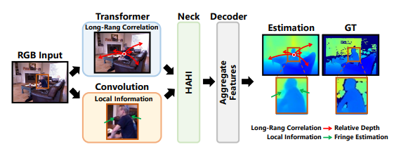

Zhenyu Li (Alex) 李震宇Phd StudentKing Abdullah University of Science and Technology Email: zhenyu.li.9955@gmail.com; Github: https://github.com/zhyever Google Scholar: Google Scholar Link CV: CV Link |
|
Biography
I'm a 1st-year PhD student at King Abdullah University of Science and Technology (KAUST), advised by Prof. Peter Wonka.
I got my B.E. and M.S degrees in computer science at Harbin Institute of Technology, China.
Experience
- Aug.2022 - Apr.2023, Elite Research Intern, DiDi Cargo
- Jan.2022 - July.2022, Research Intern, SenseTime
- Mar.2021 - Sep.2021, Development and Research Intern, SenseTime
Awards
- 1st place at VCL 2023 Challenge, Multitask Learning for Robustness Track! (ICCV 2023 Workshop)
- China National Scholarship 2022.
- 3rd place at SSLAD 2022 Challenge, 3D Object Detection Track! (ECCV 2022 Workshop)
- 2nd place at Mobile AI&AIM 2022 Challenge, Monocular Depth Estimation Track! (ECCV 2022 Workshop)
Codebase
 |
Monocular Depth Estimation Toolbox Zhenyu Li 2022 [Code] [Bibtex] |
Selected Publications
|  | Unsupervised Domain Adaptation for Monocular 3D Object Detection via Self-Training Zhenyu Li, Zehui Chen, Ang Li, Liangji Fang, Qinhong Jiang, Xianming Liu, Junjun Jiang ECCV, 2022 [PDF] [Code] |
|  | SimIPU: Simple 2D Image and 3D Point Cloud Unsupervised Pre-Training for Spatial-Aware Visual Representations Zhenyu Li, Zehui Chen, Ang Li, Liangji Fang, Qinhong Jiang, Xianming Liu, Junjun Jiang, Bolei Zhou, Hang Zhao AAAI, 2022 [PDF] [Code] |
|  | AutoAlignV2: Deformable Feature Aggregation for Dynamic Multi-Modal 3D Object Detection Zehui Chen, Zhenyu Li, Shiquan Zhang, Liangji Fang, Qinhong Jiang, Feng Zhao ECCV, 2022 [PDF] [Code] |
|  | AutoAlign: Pixel-Instance Feature Aggregation for Multi-Modal 3D Object Detection Zehui Chen, Zhenyu Li, Shiquan Zhang, Liangji Fang, Qinhong Jiang, Feng Zhao, Bolei Zhou, Hang Zhao IJCAI, 2022 [PDF] |
|  | BinsFormer: Revisiting Adaptive Bins for Monocular Depth Estimation Zhenyu Li, Xuyang Wang, Xianming Liu, Junjun Jiang Ranked 1st on KITTI depth estimation benchmark (Feb, 2022). Arxiv [PDF] [Code] |
|  | DepthFormer: Exploiting Long-Range Correlation and Local Information for Accurate Monocular Depth Estimation Zhenyu Li, Zehui Chen, Xianming Liu, Junjun Jiang Ranked 1st on KITTI depth estimation benchmark (Nov, 2021). Arxiv [PDF] [Code] |
Service
- Conference Reviewer: CVPR 2023; ECCV 2022; ICCV 2023